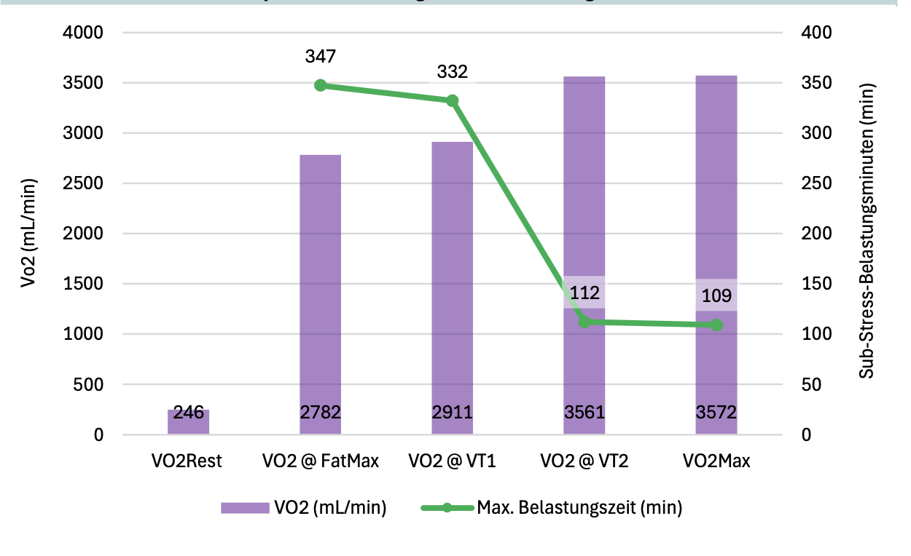

In endurance training, the body is stressed not only muscularly and cardiovascularly, but also at the cellular level due to increased oxygen uptake. Crucial for successful development is not only the absolute amount of oxygen that the body can absorb (VO2Max), but equally how well this oxygen can be used to generate energy.
The point at which cells actually absorb and utilize the most oxygen is at the performance level of maximum fat burning. Based on the amount of metabolized fats and the ratio to absorbed oxygen, a good impression of the overall cellular health and function can be gained.
This ratio is used in a further step to determine the actual tolerance to oxygen stress of the body. In this context, we speak of the Oxidative Stress Index OS-I.
With the help of these values, based on the fundamental and maximum oxygen uptake (VO2Rest and VO2Max) and including the caloric balance, it can be determined how long the body should be maximally stressed at different intensities to avoid destructive cellular stress.
Important: These calculations are based on the currently valid assumption that the maximum of reliably absorbable carbohydrates under stress is about 90 grams per hour. Exceptions and individual capacities are not considered for the baseline.
| Oxygen resting metabolic rate VO2Rest: |
246 mL/min |
| Fat oxidation to oxygen ratio FOR: |
0.023 |
| Ratio of VO2Max to VO2Rest: |
14.516 |
| Maximum oxygen stress factor: |
0.341 |
| Oxidative Stress Index OS-I |
3.73 |
| Maximum additional training load based on VO2: |
917 mL/min |

| Point of the metabolic profile: |
Max. Training time |
|
Minutes |
Hours |
| Maximum Fat Burning FatMax |
347 |
05:47 |
| Ventilatory Threshold 1 VT1 |
332 |
05:32 |
| Ventilatory Threshold 2 VT2 |
112 |
01:52 |
| Maximum Oxygen Uptake VO2Max |
109 |
01:49 |
It is important to understand that these are calculated maximum values that do not yet consider any other performance beyond the specific stress. If the body moves in other ways than interdisciplinary training, this energy balance and oxygen uptake must be included, which has drastic effects especially at higher intensities. When these factors are considered, they can be actively used preventively to avoid overtraining.